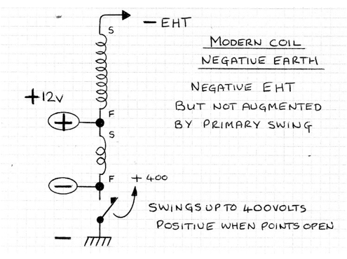
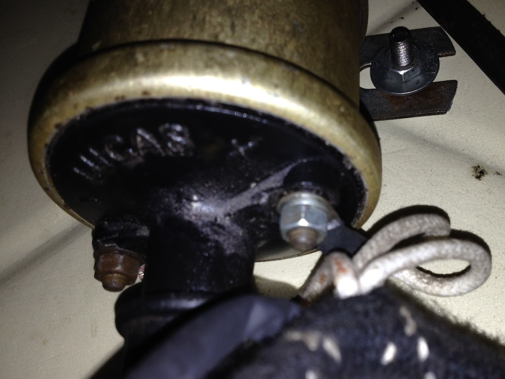

When a high voltage is applied across the gap in a spark plug then you get an electric discharge and thus a spark to (hopefully) ignite the air/fuel mixture in the cylinder. The efficiency of electron production from a conductor increases as the temperature of the conductor increases, so it is better to have a negative voltage (with respect to earth) on the spark plug electrode.
TC4985 has been converted to a negative earth and has a modern ignition coil, with the terminals marked + and - rather than SW and CB as on the original Lucus coil. An article in TTT2 by Peter Cole and Eric Worpe describes the various circuits using original and modern coils and positive and negative earth. My aim here is to verify that TC4985 does, in fact have a negative potential at the spark plug electrode. The relevant diagram from the TTT2 article is shown.
‘S’ and ‘F’ refer to the start and finish of the coil windings.
The photo shows the actual connections to the coil. You can see that two white cables are attached to the + terminal and a single white/orange cable is attached to the - terminal. According to the wiring diagram one of the white cables brings power from the battery, via the ignition switch and the control box and the other white cable takes that power on to the petrol pump. The same wiring diagram doesn’t have a white/orange cable, but has a white/black cable going to the ignition points in the distributor.
So it looks as though TC4985 is wired correctly to give a negative potential at the spark plugs, although the voltage is not as high as it would be if it were positive earth with a modern coil.
© David James 2019 Last updated: 26th December 2019